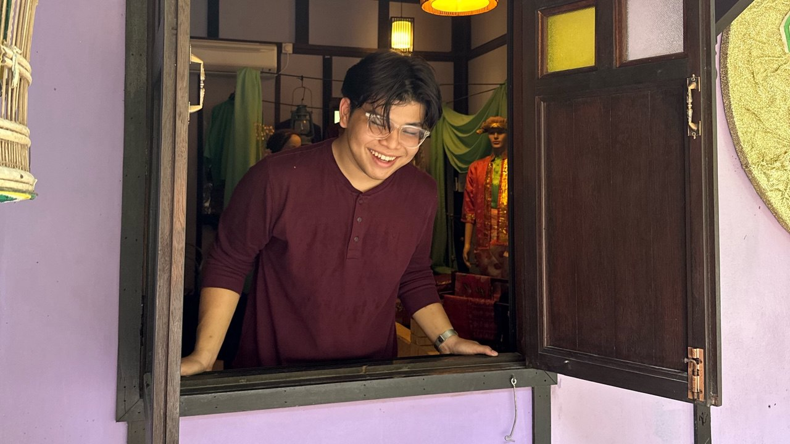

Personal
NAME: MUHAMMAD ZULHELMI BIN MASRE
AGE: 24 Years Old
INSTITUTION: UNIVERSITY OF MALAYSIA PERLIS
PROGRAMME: UR6321001 - NEW MEDIA COMMUNICATION
MATRIC: 211421147
Career
Career Chosen: PHOTOGRAPHER
Photography is an art form that allows us to freeze time, capture emotion, and preserve the world as we see it. For me, photography is more than a hobby—it's a passion and a lifelong journey. From the moment I picked up a camera, I was fascinated by its ability to tell stories without words. Every image has the power to spark a memory, inspire a feeling, or deliver a message. Choosing a career in photography means embracing creativity, technical skill, and personal expression all at once.
The modern photographer wears many hats. They are not only artists, but also storytellers, editors, entrepreneurs, and sometimes even travelers. The field is diverse and exciting, offering specializations in portrait photography, fashion, wildlife, travel, journalism, wedding photography, and much more. I am particularly drawn to the way photographers can shape the way we see the world—highlighting beauty, truth, and detail in even the most ordinary things.
Pursuing photography professionally requires a strong foundation in visual composition, lighting, and post-processing. But just as important is the ability to connect with people, adapt to different situations, and stay curious. A good photograph often comes from moments of spontaneity, patience, and understanding the story behind the subject. That’s why I believe developing a personal style and point of view is just as important as mastering the tools of the trade.
As I prepare for a career in photography, I am motivated by the idea of lifelong learning. The industry evolves quickly with new technologies, trends, and techniques. From DSLR cameras to mirrorless systems, from Lightroom editing to drone photography—the tools may change, but the vision remains the same: to capture the world in a meaningful way. I am excited by the opportunity to grow both artistically and professionally, as I turn my passion into a full-fledged career.
Ultimately, I envision a future where I can travel, document life, and create powerful images that resonate with others. Photography offers freedom, expression, and the chance to impact people on a personal and emotional level. My goal is not only to master the craft, but to use it to inspire others, share stories, and leave a visual legacy that lasts long after the shutter clicks.
Want to know how I plan to become a photographer? Click here to view the step-by-step guide.
Contact
Let's get in touch and talk about the future together.